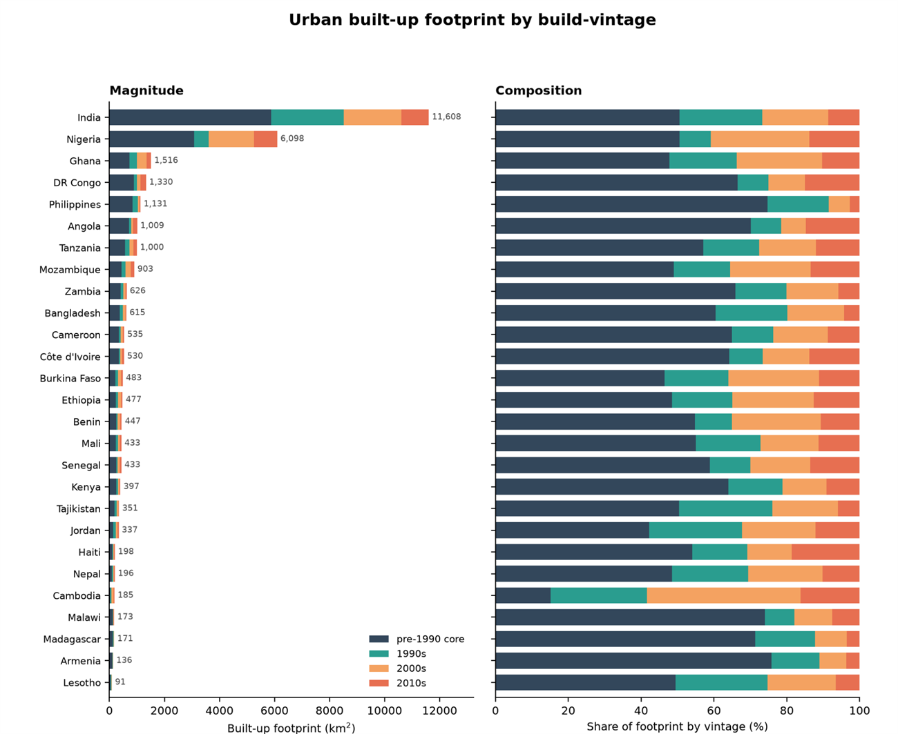
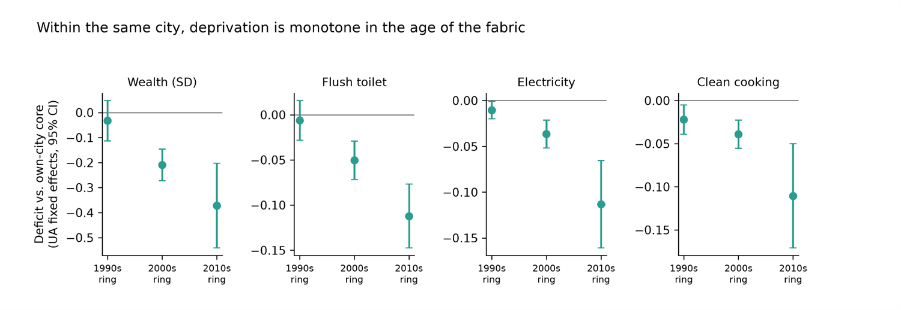

Working Paper · 2026
Build-vintage as a map for service and investment — evidence from 26 Global-South countries
Two results
Across 26 Global-South countries, a city’s economic edge routinely outgrows its serviced core. I date every pixel of urban fabric by the decade it was first built, split each agglomeration into a pre-1990 core and decadal expansion rings, and place 334,091 georeferenced survey households on those rings. Two pictures carry the argument.

About half of today’s urban fabric is post-1990 — a median of 45% across countries, and in the fastest cases the newer build exceeds the entire pre-1990 city (Phnom Penh is 85% new; Amman, Ouagadougou, Accra, Kathmandu and Addis Ababa are all above half). India and Nigeria alone hold 56% of the sample’s urban land. The city most institutions still picture — the old serviced core — is now a minority of the ground people actually live on.

That newer fabric is the deprived fabric. Holding the city fixed, deprivation deepens monotonically with how recently the land was built: households on the 2010s ring are about 0.37 SD poorer than their own core, with 10–12 percentage points less flush sanitation, electricity, and clean cooking, while the 1990s ring has converged back to the core. It is tempting to read that convergence as reassuring — it is not. The gap closes only on the measured services, and only over about a decade, and that decade of waiting is itself the cost: out-of-pocket spending on missing water, hours lost commuting, and private investment kept off unserviced land — a drag on the whole city’s productivity, not only on the households at the edge. The dimensions that do not come back with the pipes lag far longer: the frontier cohort carries 0.7–0.8 fewer years of schooling, a human-capital deficit that outlives the infrastructure that produced it. And catch-up is not universal — Dhaka and Dushanbe stay deprived across both waves, while Amman inverts the pattern through refugee densification of its old core.
Why it matters. Build-date is satellite-observable and near-real-time, so it gives a lender, a ministry, or a city a map of where the service deficit is now — which rings to connect to water, sewerage, and transit first — without waiting on the next household survey. How fast a city closes its frontier gap, and why a few never do, is the causal question this design sets up.
Abstract
A city’s economic boundary, its contiguous built-up agglomeration, routinely outgrows the boundary that governs it. Dating every pixel of urban fabric in 27 Global-South countries by the decade it first urbanized (GHSL build-vintage), we split each agglomeration into a pre-1990 core and three decadal expansion rings and place georeferenced DHS households on the rings in 26 of them across two survey waves (334,091 households, 758 agglomerations).
We report three findings. First, within the same city, deprivation falls with the age of the fabric; households on the 2010s ring are 0.37 SD poorer than their own core, with 10 to 12 pp less flush sanitation and clean cooking, while the 1990s ring is at the core. Second, following fixed rings across two waves these deficits narrow on average, so the frontier is usually a transient cohort the city grows out of, but absorption takes about a decade and the delay is costly, so it drags on the whole city’s productivity and not only the households on it. Third, catch-up is not universal; Dhaka and Dushanbe stay deprived across both waves and Amman inverts the pattern, while which cities diverge tracks neither region nor income, and development-bank finance is neither necessary nor sufficient for closing the gap.
Because DHS frames predate the newest fabric they under-cover the frontier, so the estimates lean on the better-sampled cities and if anything understate the deficit. How fast a city closes its frontier gap, and why a few never do, is the causal question this design sets up.